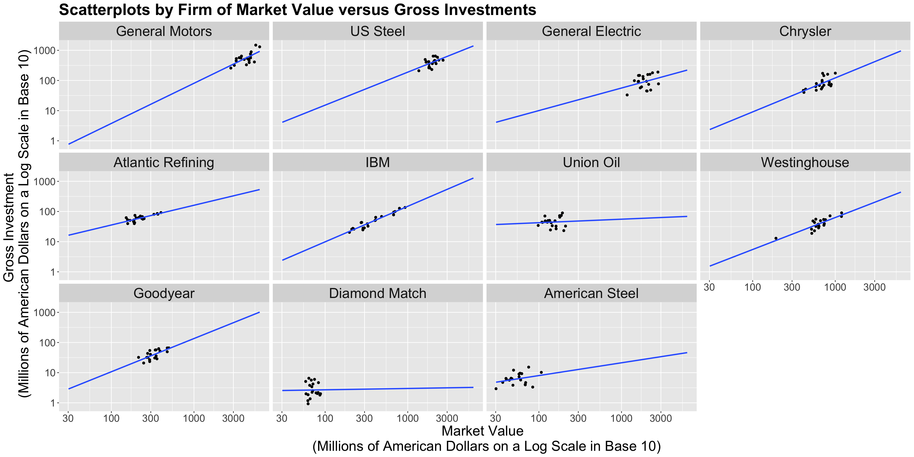
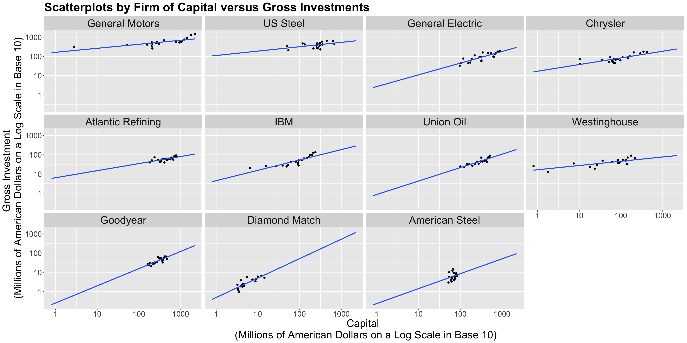

Main Statistical Inquiries
- We are interested in assessing the association of gross
investmentwithmarket_valueandcapitalin the population of American firms. - Then, how can we fit a linear model to this data?
Linear Mixed-effects Models
By the end of this lecture, you should be able to:
Identify the model assumptions in a linear Mixed-effects model.
Associate a term (or combination of terms) in a Mixed-effects model with the following quantities:
R, and extract estimates of the above quantities.\[Y_i = \beta_0 + \beta_1 X_{i,1} + \beta_2 X_{i,2} + \ldots + \beta_k X_{i,k} + \varepsilon_{i} \; \; \; \; \text{for} \; i = 1, \ldots, n.\]
The data frame
Grunfeld, from package{AER}, contains 220 observations from a balanced panel of 11 sampled American firms from 1935 to 1954 (20 observations perfirm). The dataset includes a continuous responseinvestmentsubject to two explanatory variables,market_valueandcapital.
investment: the gross investment, a continuous response.market_value: the firm’s market value, a continuous explanatory variable.capital: stock of plant and equipment, a continuous explanatory variable.firm: a nominal explanatory variable with eleven levels indicating the firm (General Motors, US Steel, General Electric, Chrysler, Atlantic Refining, IBM, Union Oil, Westinghouse, Goodyear, Diamond Match, and American Steel).year: the year of the observation (it will not be used in our analysis).R!A. Yes, we have a data hierarchy with one level: firm. Still, there will not be a correlation among subsets of data points.
B. Yes, we have a data hierarchy with one level: firm. Hence, there will be a correlation among subsets of data points.
C. There is no data hierarchy at all. All observations in the training set are independent.
D. Yes, we have a data hierarchy with two levels: firm (level 1) and the corresponding yearly observations (level 2). Hence, there will be a correlation among subsets of data points.
investment with market_value and capital in the population of American firms.investment versus market_value but facetted by firm and use geom_smooth() to fit sub-models by firm.Heads-up: Only for plotting, we will transform both \(x\) and \(y\)-axes on the logarithmic scale in base 10 (
trans = "log10"). This allows us to compare those firms under dissimilar market values, capital, and gross investments.



Heads-up: Always keep in mind the main statistical inquiry when taking any given modelling approach.
firm, and fit an ordinary least-squares (OLS) regression on the averages. This is not an ideal approach.firm. This is not an ideal approach.firm.firm (i.e., an interaction model!).\[\begin{align*} \texttt{investment}_{i} &= \beta_0 + \beta_1 \texttt{marketValue}_{i} + \beta_2\texttt{capital}_{i} + \varepsilon_{i} \\ & \qquad \qquad \qquad \qquad \qquad \qquad \text{for} \; i = 1, \ldots, 220. \end{align*}\]
R!investment as a response to market_value and capital as regressors but with varying intercepts by each firm.lm() by adding - 1 on the right-hand side of the argument formula.- 1 will allow the baseline firm to have its intercept (i.e., renaming (Intercept) in column estimate with firmCompanyName).R!R!adj.r.squared, we see that model_varying_intercept has a larger value (0.959) than ordinary_model (0.816).model_varying_intercept is equivalent to just fitting the OLS model using:formula = investment ~ market_value + capital + firm.
lm() without -1model_varying_intercept and ordinary_model, we can test if there is a gain in considering a varying intercept versus fixed intercept.model_varying_intercept fits the data better than the ordinary_model.model_varying_intercept fits the data better than the ordinary_model.firm except for the baseline.DF in the anova() output).Heads-up: In this specific case, losing 10 degrees of freedom is not a big deal with 220 data points. Nonetheless, when data is scarce or the model’s complexity demands a large amount of regression parameters, this could be an issue.
model_varying_intercept?
A. \[\begin{align*} \texttt{investment}_{i,j} &= \beta_{0} + \beta_1 \texttt{marketValue}_{i,j} + \beta_2\texttt{capital}_{i,j} + \varepsilon_{i,j} \\ & \qquad \qquad \quad \text{for} \; i = 1, \ldots, 20 \; \; \text{and} \; \; j = 1, \ldots, 11. \end{align*}\]
B. \[\begin{align*} \texttt{investment}_{i} &= \beta_{0} + \beta_1 \texttt{marketValue}_{i} + \beta_2\texttt{capital}_{i} + \varepsilon_{i} \\ & \qquad \qquad \quad \text{for} \; i = 1, \ldots, 220. \end{align*}\]
C. \[\begin{align*} \texttt{investment}_{i,j} &= \beta_{0,j} + \beta_1 \texttt{marketValue}_{i,j} + \beta_2\texttt{capital}_{i,j} + \varepsilon_{i,j} \\ & \qquad \qquad \quad \text{for} \; i = 1, \ldots, 20 \; \; \text{and} \; \; j = 1, \ldots, 11. \end{align*}\]
R!Heads-up: We have plenty of data points in this case for all the degrees of freedom required to estimate each parameter. Nonetheless, this might not hold for other small datasets. Also, we must consider other modelling scenarios in which there may be more than two regressors of interest with different natures (discrete and continuous), which may require a large number of degrees of freedom.
What is the sample’s regression equation for model_by_firm?
A.
\[\begin{align*} \texttt{investment}_{i,j} &= \beta_{0,j} + \beta_{1,j} \texttt{marketValue}_{i,j} + \beta_{2,j} \texttt{capital}_{i,j} + \varepsilon_{i,j} \\ & \qquad \qquad \quad \text{for} \; i = 1, \ldots, 20 \; \; \text{and} \; \; j = 1, \ldots, 11. \end{align*}\]
B.
\[\begin{align*} \texttt{investment}_{j} &= \beta_{0} + \beta_1 \texttt{marketValue}_{j} + \beta_2\texttt{capital}_{j} + \varepsilon_{j} \\ & \qquad \qquad \quad \text{for} \; j = 1, \ldots, 11. \end{align*}\]
C. \[\begin{align*} \texttt{investment}_{i,j} &= \beta_{0,i} + \beta_{1,i} \texttt{marketValue}_{i,j} + \beta_{2,i} \texttt{capital}_{i,j} + \varepsilon_{i,j} \\ & \qquad \qquad \quad \text{for} \; i = 1, \ldots, 20 \; \; \text{and} \; \; j = 1, \ldots, 11. \end{align*}\]
Each regression coefficient is associated with a
firm. For example, \(\texttt{firmUS Steel:capital} = 0.02\) means that the variablecapitalhas a slope of \(0.02 + 0.37 = 0.39\) forUS Steel. We can double-check this by estimating an individual linear regression forUS Steel.
market_value and capital were related to investment and by how much.firm has its own intercept \(b_{0,j}\) and the overall fixed intercept is \(\beta_0\) for all American companies.\[\begin{equation*} \beta_{0,j} = \beta_0 + b_{0,j}. \end{equation*}\]
firm which would make it a random effect.\[\begin{align*} \texttt{investment}_{i,j} &= \overbrace{\beta_{0,j}}^{\text{Mixed Effect}} + \beta_1 \texttt{marketValue}_{i,j} + \\ & \qquad \quad \beta_2\texttt{capital}_{i,j} + \varepsilon_{i,j} \\ &= (\beta_0 + b_{0,j}) + \beta_1 \texttt{marketValue}_{i,j} + \\ & \qquad \quad \beta_2\texttt{capital}_{i,j} + \varepsilon_{i,j} \\ & \qquad \qquad \; \; \; \; \text{for} \; i = 1, \ldots, n_j \; \; \text{and} \; \; j = 1, \ldots, 11. \end{align*}\]
Heads-up: Note that \(n_j\) is making the model even more flexible by allowing different numbers of observations \(n_j\) in each \(j\)th firm.
\[b_{0,j}\sim \mathcal{N}(0, \sigma_0^2)\]
is called a random effect and we assume it is independent of the error component
\[\varepsilon_{i,j}\sim \mathcal{N}(0, \sigma^2).\]
Heads-up: The observations for the same
firm(group) share the same random effect making a correlation structure.
The variance of the \(i\)th response for the \(j\)th firm will be \[\begin{equation*}
\text{Var}(\texttt{investment}_{i,j}) = Var(b_{0,j}) + Var(\varepsilon_{i,j}) = \sigma_0^2 + \sigma^2.
\end{equation*}\]
For the \(k\)th and \(l\)th responses, within the \(j\)th firm, the correlation is given by: \[\begin{equation*} \text{Corr}(\texttt{investment}_{k,j}, \texttt{investment}_{l,j}) = \frac{\sigma^2_0}{\sigma_0^2 + \sigma^2}. \end{equation*}\]
We could even go further and model random slopes, along with the existing fixed ones, as follows: \[\begin{align*} \texttt{investment}_{i,j} &= \overbrace{\beta_{0,j}}^{\text{Mixed Effect}} + \overbrace{\beta_{1,j}}^{\text{Mixed Effect}} \times \texttt{marketValue}_{i,j} + \\ & \qquad \quad \overbrace{\beta_{2,j}}^{\text{Mixed Effect}} \times \texttt{capital}_{i,j} + \varepsilon_{i,j} \\ &= (\beta_0 + b_{0,j}) + (\beta_1 + b_{1,j}) \times \texttt{marketValue}_{i,j} + \\ & \qquad \quad (\beta_2 + b_{2,j}) \times \texttt{capital}_{i,j} + \varepsilon_{i,j} \\ & \qquad \qquad \qquad \text{for} \; i = 1, \ldots, n_j \; \; \text{and} \; \; j = 1, \ldots, 11; \end{align*}\]
Note \((b_{0,j}, b_{1,j}, b_{2,j})^{T} \sim \mathcal{N}_3(\mathbf{0}, \mathbf{D})\), where \(\mathbf{0} = (0, 0, 0)^T\) and \(\mathbf{D}\) is a generic covariance matrix.
\[\begin{equation*} \mathbf{D} = \begin{bmatrix} \sigma_{0}^2 & \rho_{01} \sigma_{0} \sigma_{1} & \rho_{02} \sigma_{0} \sigma_{2}\\ \rho_{01} \sigma_{0} \sigma_{1} & \sigma_{1}^2 & \rho_{12} \sigma_{1} \sigma_{2}\\ \rho_{02} \sigma_{0} \sigma_{2} & \rho_{12} \sigma_{1} \sigma_{2} & \sigma_{2}^2 \end{bmatrix} = \begin{bmatrix} \sigma_{0}^2 & \sigma_{0, 1} & \sigma_{0, 2} \\ \sigma_{0, 1} & \sigma_{1}^2 & \sigma_{1,2}\\ \sigma_{0, 2} & \sigma_{1, 2} & \sigma_{2}^2 \end{bmatrix} \end{equation*}\]
mixed_intercept_model) via the function lmer() from package lme4.(1 | firm) allows the model to have a random intercept by firm.
full_mixed_model).
mixed_intercept_model.investment in each model via summary().lmerTest via function summary().
market_value and capital are significant with \(\alpha = 0.05\) in both models.investment mean of the American companies.firm along with the intercepts for both models via coef().R!(Intercept) is the sum \(\hat{\beta}_0 + \hat{b}_{0,j}\).market_value and capital are the same since mixed_intercept_model only has \(\beta_1\) and \(\beta_2\) as its general modelling setup.full_mixed_model given that we also include random effects for market_value and capital.market_value and capital are the sums \(\hat{\beta}_1 + \hat{b}_{1,j}\) and \(\hat{\beta}_2 + \hat{b}_{2,j}\), respectively.(Intercept) is the sum \(\hat{\beta}_0 + \hat{b}_{0,j}\).market_value and capital behave in a really particular way when comparing the OLS model_varying_intercept and the Mixed-effects full_mixed_model.
We can make two classes of predictions with Mixed-effects models:
R!If we wanted to predict the
investmentforGeneral Motorswith amarket_valueof USD \(\$2,000\) million and capital of USD \(\$1,000\) million, then our answer would be USD \(\$537.4\) million.
If we wanted to predict the MEAN
investmentfor American companies with amarket_valueof USD \(\$2,000\) million and capital of USD \(\$1,000\) million, then our answer would be USD \(\$341.51\) million. This prediction only uses \(\hat{\beta_0}\), \(\hat{\beta_1}\), and \(\hat{\beta_2}\).

DSCI 562 - Regression II